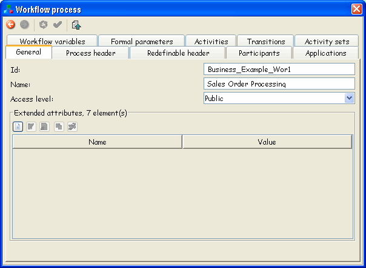
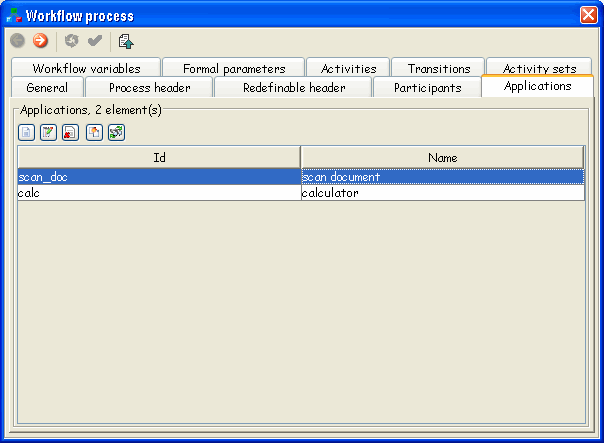
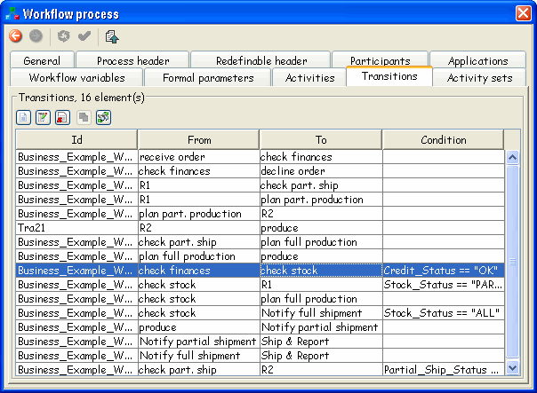

The Process Definition entity provides contextual information that applies to other entities within the process. This describes the process itself. It is a container for the process itself and provides information associated with administration (creation date, author, etc.) or to be used during process execution (initiation parameters to be used, execution priority, time limits to be checked, person to be notified, simulation information, etc.). Definition entity thus provides header information for the process definition and is therefore related to all other entities in that process.

The Workflow Process Definition defines the elements that make a workflow. It contains definitions or declarations, respectively, for Activity and, optionally, for Transition, Application, and Process Relevant Data entities.
A Workflow Process may run as an implementation of an activity of type subflow; in this case parameters may be defined as attributes of the process.
TWE provides a way to manage process definition entities. On the picture showing main toolbar organization, you can see where is the toolbar part for handling the propertiesOn this picture you can see the organization of the selected WorkflowProcess.
If you create (override) some process with the same Id as the one from the external package, only the one from the current package can be used as the implementation process of sublfow activity.
Typically, you will create a new
process by pressing the button  from the main toolbox or selecting appropriate
item from Package menu.
from the main toolbox or selecting appropriate
item from Package menu.
WorkflowProcess attributes can be divided in few logical parts:
Table 4.6. General Attributes
| Name | M/O | Description |
|---|---|---|
| Id | M | Used to identify the workflow process (Read Only). |
| Name | O | Name of the model, used to identify the workflow process. |
| AccessLevel | O | The Access level of a process may be either PUBLIC or PRIVATE. If PUBLIC, the process may be invoked by an external system or application. A process with private access may only be invoked from a SubFlow Activity. |
Table 4.7. Process Header
| Name | M/O | Description | ||||||
|---|---|---|---|---|---|---|---|---|
| Duration Unit | M | Describes the default unit to be applied to an integer
duration value that has no unit tag. Possible units
are:
| ||||||
| Created | O | Creation date of workflow process definition. | ||||||
| Description | O | Short textual description of the process. | ||||||
| Priority | O | The priority of the process type. Default: Inherited from Model Definition. | ||||||
| Limit | O | Expected duration for time management purposes (e.g. starting an escalation procedure etc.) in units of DurationUnit. It is counted from the starting date/time of the Process. The consequences of reaching the limit value are not defined in this document (i.e. vendor specific). It is assumed that in this case at least the Responsible of the current process is notified of this situation. | ||||||
| Valid From | O | The date that the workflow process definition is active from. Empty string means system date. Default: Inherited from Model Definition. | ||||||
| Valid To | O | The date at which the process definition becomes valid. Empty string means unlimited validity. Default: Inherited from Model Definition. | ||||||
| Waiting Time | O | Describes the amount of time, which is needed to prepare the performance of the task (time estimation) (waiting time is provided by the analysis environment and may be updated by the runtime environment) in units of DurationUnit. | ||||||
| Working Time | O | Describes the amount of time the performer of the activity needs to perform the task (time estimation) (working time is needed for analysis purposes and is provided by the evaluation of runtime parameters) in units of DurationUnit. | ||||||
| Duration | O | Expected duration time to perform a task in units of DurationUnit. |
In Process Header Tab there is Time Estimation group where we define Waiting Time, Working Time and Duration. This is used for simulation purposes.
Table 4.8. Redefinable Header
| Name | M/O | Description | |||
|---|---|---|---|---|---|
| Publication Status | O | Status of the Workflow Process Definition. Default:
Inherited from Model Definition.
| |||
| Author | O | Name of the author of this workflow process definition. (the one who puts it into the package) | |||
| Version | O | Version of this workflow process definition. | |||
| Codepage | O | The codepage used for the text parts. Default: Inherited from Model Definition. | |||
| Country key | O | Country code based on ISO 3166. It could be either the three digits country code number, or the two alpha characters country codes. Default: Inherited from Model Definition. | |||
| Responsible(s) | O | Workflow participant, who is responsible for this workflow process (usually an Organisational Unit or a Human). It is assumed that the supervisor is responsible during execution of the process. Default: Inherited from Model Definition. |
The responsibles for Process are added in the same way as it is at Package level, which is explained earlier in text.
In TWE, you can get the property panel to edit all workflow
process attributes by clicking on a toolbar icon  , or selecting the appropriate menu item.
, or selecting the appropriate menu item.
It contains a lot of different data about workflow process. All information are organized in several tabs: general, process header, redefinable header, participants, applications, workflow variables, formal parameters, activities, transitions and activity sets.
All the tabs that will be mentioned can be also displayed as a separate property panels, either by selecting appropriate element in a Package tree, and asking for its properties, or by selecting appropriate toolbox button or menu item.
General tab - displays general process data
 Tab has two parts. First part contains process id, name (this name will appear in window's title bar) and access level (can be private or public).
Second part shows all process extended attributes and also offers operations with them.
Process header tab
This dialog defines elements and attributes of XPDL's ProcessHeader element.
Field Duration unit can have one of the following values: second, minute, hour, day, month, year.
Field Created displays the process creation date and field Description is place for short description of this workflow process.

Redefinable header tab

Tab has two parts. First part contains the following fields: Publication status (can have one of the following values: under revision, under test, or released), Author (author of the process), Version (version number for the process), Codepage and Country key.
Second part, called Responsibles, contains list of all responsibles for the process and operations for managing the list.
Participants tab
It contains information about all participants of the workflow process. Every table row (participant) is described with id, name (optional value) and participant type. It contains toolbar buttons for managing the listed participant elements.

Applications tab
 It contains information about all applications of the workflow process. Every table row (application) is described with id and name (optional value). It contains toolbar buttons for managing the listed application elements.
Workflow variables tab
It contains information about all workflow process's workflow variables. Every table row (workflow variable) is described with id, name (optional value) and data type. It contains toolbar buttons for managing the listed workflow variable elements.

Formal parameters tab

It contains information about all workflow process's formal parameters. Every table row (formal parameter) is described with id, mode and data type. It contains toolbar buttons for managing the listed formal parameter elements.
Activities tab
It contains information about all activities of the workflow process. Every table row (activity) is described with id, name (optional value) and performer (optional value). It contains toolbar buttons for managing the listed activity elements.

Transitions tab
 It contains information about all workflow process's transitions. Every table row (transition) is described with id, from (source), to (target) and condition (optional value). It contains toolbar buttons for managing the listed transition elements.
Activity sets tab
It contains information about all activity sets of the workflow process. Every table row (activity set) is described with id, activities and transitions. It contains toolbar buttons for managing the listed activity set elements.